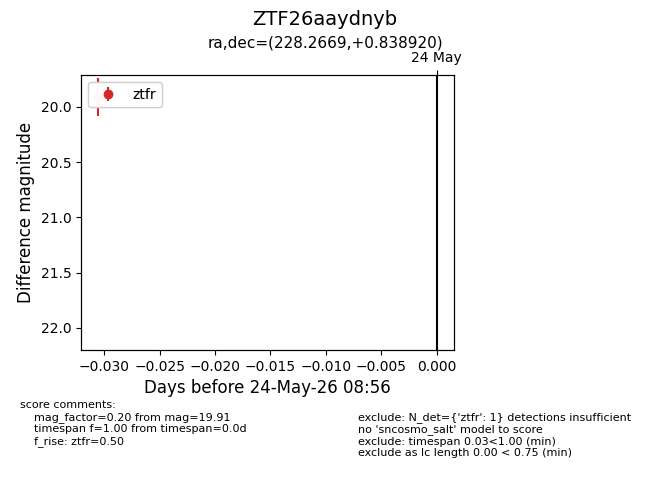
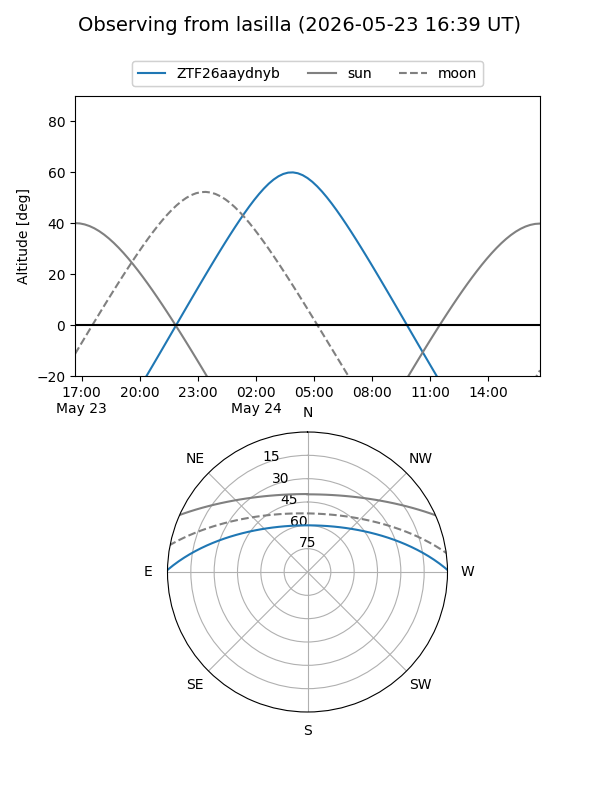
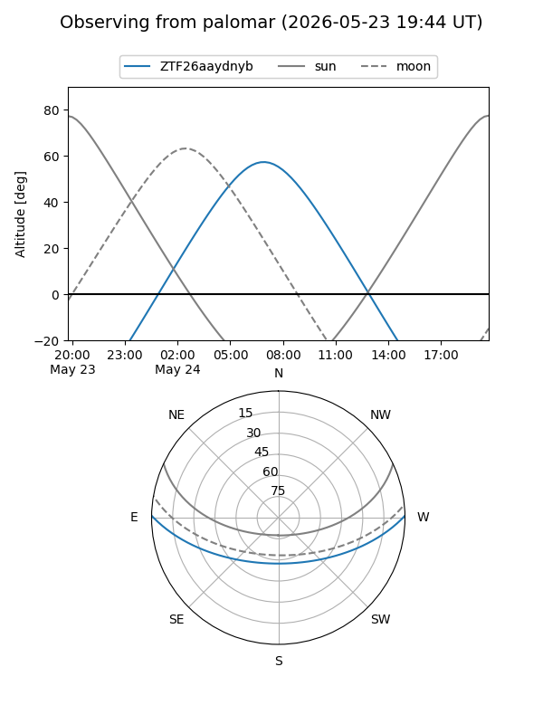

ZTF26aaydnyb
Target ZTF26aaydnyb at 2026-05-24 08:57
Aliases and brokers:
lsst-FINK: link
lsst-Lasair: link
lsst-ALeRCE: link
ztf-FINK: link
ztf-Lasair: link
ztf-ALeRCE: link
alt names
ZTF26aaydnyb (ztf,fink_ztf)
Coordinates:
equatorial (ra, dec) = 228.2669,+0.83892
equatorial (HMS+DMS) = 15:13:04.05,+00:50:20.11
galactic (l, b) = (1.1760,+47.05313)
Flags:
Photometry:
last ztfr=19.91
1 ztfr detections
Lightcurve

Visibility


Additional plots